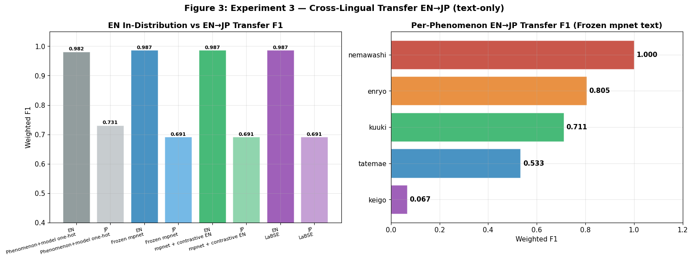
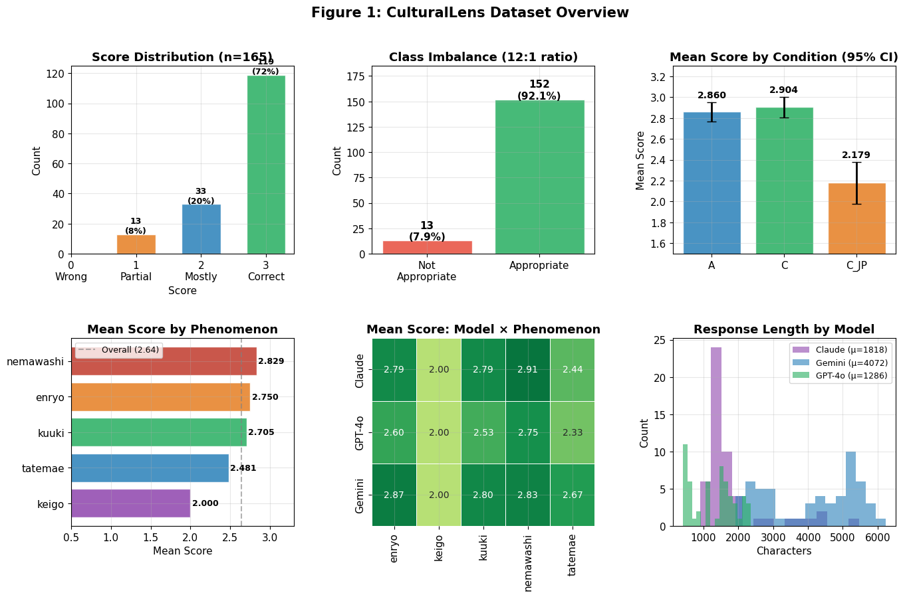
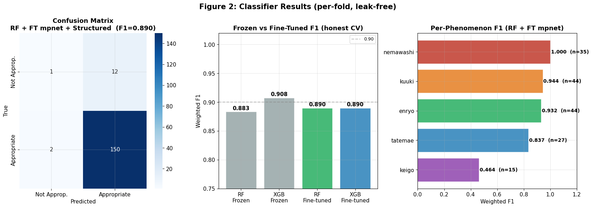
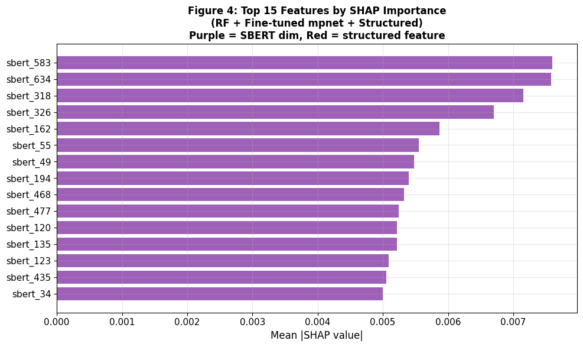

FEATURED PROJECT — MACHINE LEARNING II · ADSP 31018 · SPRING 2026
CulturalLens
When AI Can’t Read Between the Lines
A falsifiable test of cross-cultural competence in large language models.
Today’s leading large language models are trained predominantly on English text. They can fluently describe Japanese cultural norms in the abstract, but do they actually apply that understanding when navigating a live social situation in Japanese? CulturalLens answers that question empirically. I built a machine learning classifier to test whether what a model learns about cultural appropriateness in English carries across to Japanese, then ran a pre-registered experiment with a fixed success threshold. The hypothesis failed decisively. The result is a clean computational confirmation of a typological theory the linguist John Hinds proposed in 1987.

By the Numbers
The Finding
The central experiment trained the classifier on English responses only, then tested it on Japanese responses without retraining. The pre-registered success criterion was a transfer gap below 0.10. Every text-based representation I tried—including LaBSE, a model explicitly pre-trained on parallel sentence pairs across 109 languages for cross-lingual alignment—produced exactly the same Japanese F1 of 0.691. The gap was 0.295, almost three times the threshold. All three multilingual text embeddings predicted “appropriate” for every single Japanese response. They captured nothing. The keigo phenomenon, formal honorific register, collapsed to an F1 of 0.067. The hypothesis was decisively falsified.
The Study Design

I authored 19 original Japanese pragmatic scenarios covering five culturally specific phenomena: enryo (ritual restraint), nemawashi (consensus building), kuuki wo yomu (reading the air), tatemae and honne (public versus private feeling), and keigo (honorific register). Three large language models—GPT-4o, Claude Sonnet 4.6, and Gemini 2.5 Pro—responded to every scenario under three conditions: plain English, English with cultural coaching, and fully in Japanese. That yielded 171 responses, 165 of which scored cleanly after I excluded truncated outputs. As an ACTFL Advanced High Japanese speaker, I annotated every response on a four-point pragmatic appropriateness scale. The most striking signal in the raw data is on the top right of the figure above: mean appropriateness drops from about 2.9 in English to 2.18 in Japanese. The cultural coaching prompt does almost nothing to help.
The Classifier

Each response was encoded as a 768-dimensional vector using multilingual Sentence BERT, then combined with structured features into a 778-dimensional representation. I trained Random Forest and XGBoost classifiers with stratified five-fold cross-validation. The final weighted F1 within a single language was 0.890, with all data leakage carefully controlled. (An earlier version of this analysis reported 0.981; that figure turned out to be inflated by test-set leakage in the fine-tuning step, which I documented and corrected. The honest 0.890 is the number that should be cited.) The classifier works within a language. The interesting question is what happens when it has to cross one.
What It Means
The fact that three completely different embedding spaces produced identical Japanese predictions means the failure cannot be blamed on any single model. The English-trained representation of cultural appropriateness simply does not exist for Japanese, even when the embedding is explicitly built to bridge languages. This is what the linguist John Hinds proposed in 1987, now confirmed at the representational level: writer-responsible languages like English and reader-responsible languages like Japanese encode meaning so differently that what is learnable in one is not learnable in the other.
The practical implication is direct. Deploying AI in Japanese settings and evaluating it with English-style yardsticks will systematically overstate how competent these systems actually are.
